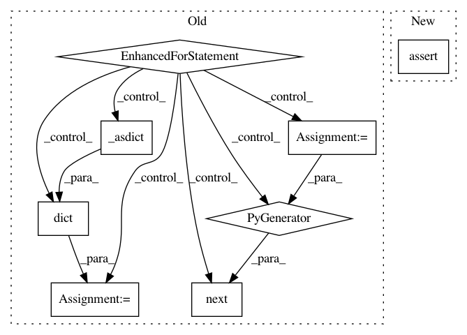

f57c6162ea1dd0d9958d647a67e717f1de9caace,petastorm/tests/test_end_to_end.py,,test_unlimited_epochs,#Any#Any#,338
Before Change
Tests that unlimited epochs works as expected
with reader_factory(synthetic_dataset.url, num_epochs=None) as reader:
// Read many expected entries from the dataset and compare the data to reference
for _ in range(len(synthetic_dataset.data) * 3 + 2):
actual = dict(next(reader)._asdict())
expected = next(d for d in synthetic_dataset.data if d["id"] == actual["id"])
np.testing.assert_equal(expected, actual)
def test_num_epochs_value_error(synthetic_dataset):
Tests that the reader raises value errors when appropriate
// Testing only Reader v1, as the v2 uses an epoch generator. The error would raise only when the generator is
After Change
read_limit = len(synthetic_dataset.data) * 3 + 2
actual_ids = _readout_all_ids(reader, read_limit)
expected_ids = [d["id"] for d in synthetic_dataset.data]
assert len(actual_ids) > len(expected_ids)
assert set(actual_ids) == set(expected_ids)
@pytest.mark.parametrize("reader_factory", MINIMAL_READER_FLAVOR_FACTORIES + SCALAR_ONLY_READER_FACTORIES)
In pattern: SUPERPATTERN
Frequency: 3
Non-data size: 8
Instances
Project Name: uber/petastorm
Commit Name: f57c6162ea1dd0d9958d647a67e717f1de9caace
Time: 2018-12-09
Author: yevgeni@uber.com
File Name: petastorm/tests/test_end_to_end.py
Class Name:
Method Name: test_unlimited_epochs
Project Name: uber/petastorm
Commit Name: f57c6162ea1dd0d9958d647a67e717f1de9caace
Time: 2018-12-09
Author: yevgeni@uber.com
File Name: petastorm/tests/test_end_to_end.py
Class Name:
Method Name: test_single_column_predicate
Project Name: uber/petastorm
Commit Name: f57c6162ea1dd0d9958d647a67e717f1de9caace
Time: 2018-12-09
Author: yevgeni@uber.com
File Name: petastorm/tests/test_end_to_end.py
Class Name:
Method Name: test_partition_multi_node